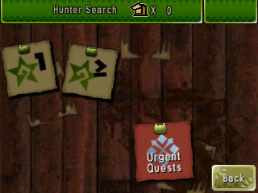
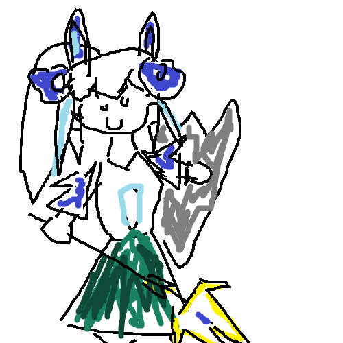

Hi! I'm actually in class right now, so I shouldn't actually be writing this blog right now, but we're using computers so my teacher'll only have to blame themselves for that.
+ the announcement for the new monster hunter wilds hyped me up (but not enough to make me grind for MR100)
This is not a review by the way.
Before talking about the video game Monster Hunter Rise (and Sunbreak) from the video game series Monster Hunter by Capcom, I'm actually going to talk about my experience with the video game series Monster Hunter by Capcom!
I've joined this series at like the age of 8, with Monster Hunter 4 Ultimate, making me a veteran hunter I guess :p
However I didn't make it very far, because first of all baby blooshy is extremely bad at video games, and most importantly got scared by the urgent quest, thinking I was not good enough for it. So I just stuck with killing Great Jaggis (^^ ;).
(Btw I mained Dual Blades for the 3 people who are interested.)
But is the blooshy from 2022, was able to complete MH4?????
The answer is... I mean I beat to Gore Magala, but stopped at the first Advanced quest because I was too poor (I couldn't even afford potions.)
"Wow, that's very cool" -you say, "but what about Rise?"
I actually have basic stuff this time so I very easily beat this game, and bought the DLC later because everyone had it except me and I felt excluded.
I'm currently at around MR75, and you need to reach 100, unfortunately I am too lazy.
I also tried Monster Hunter Frontier, I did my first quest against a Kulu-Ya-Ku, in which I took 30 minutes of my weapon bouncing against his beck, and only having the 5 Mini-Whetstones for a weapon that loses its yellow sharpness in 10 hits.
Anyway thanks for reading I am still in class so you'll have to bear my MS Paint touchpad drawn hunter (from MHR:S)
